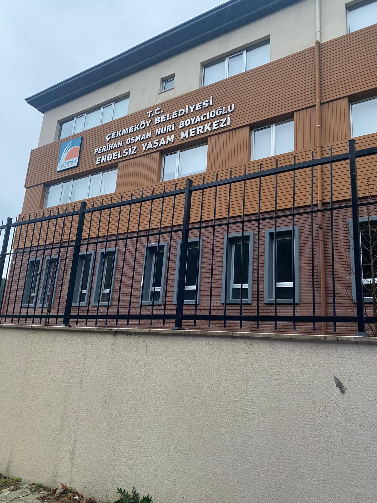
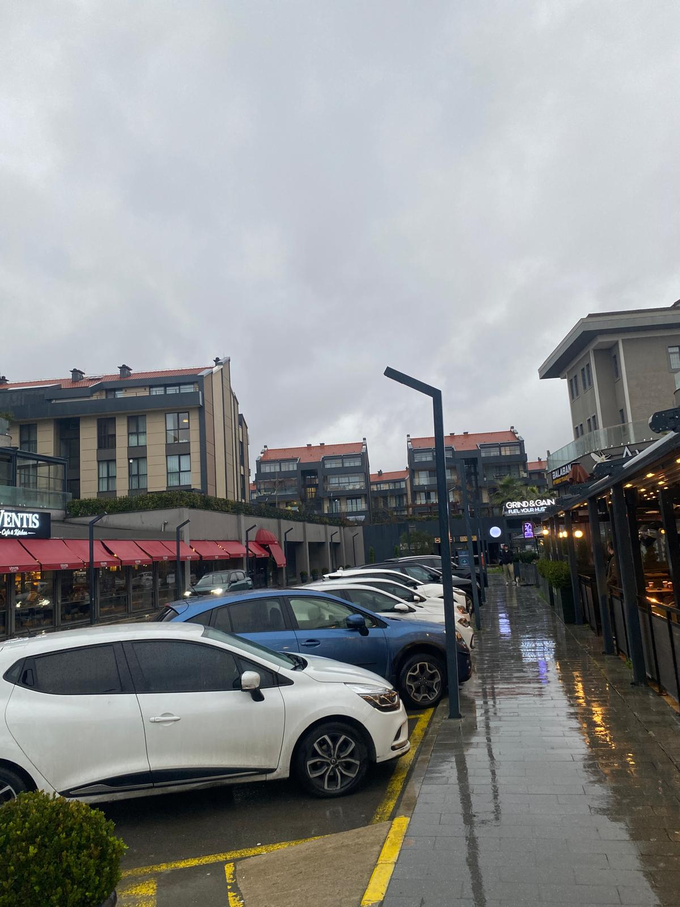
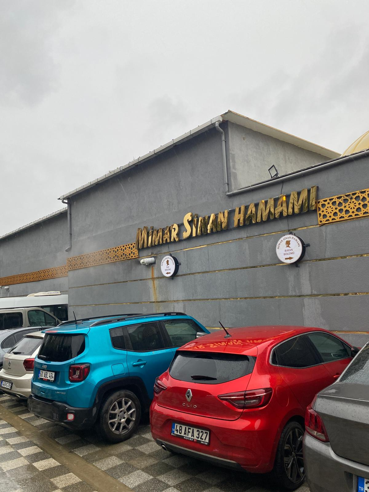
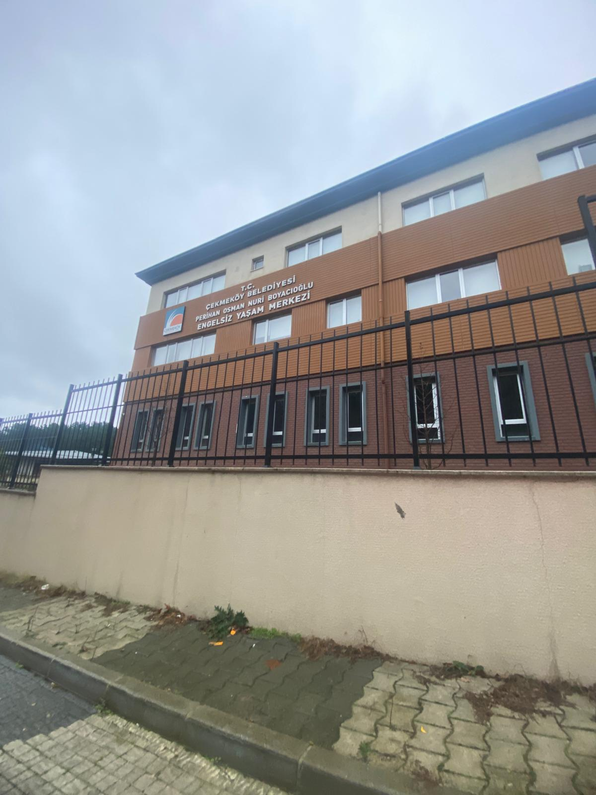
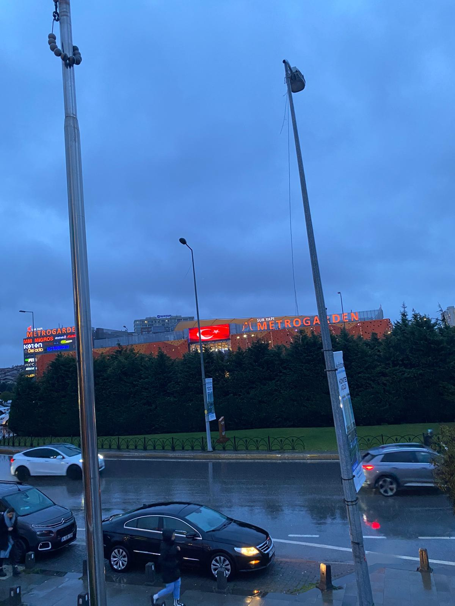
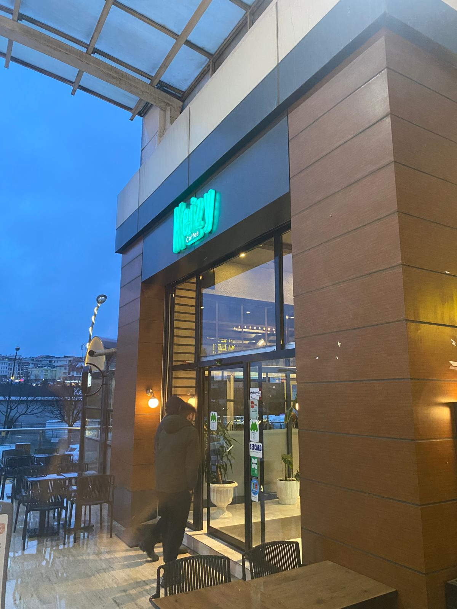
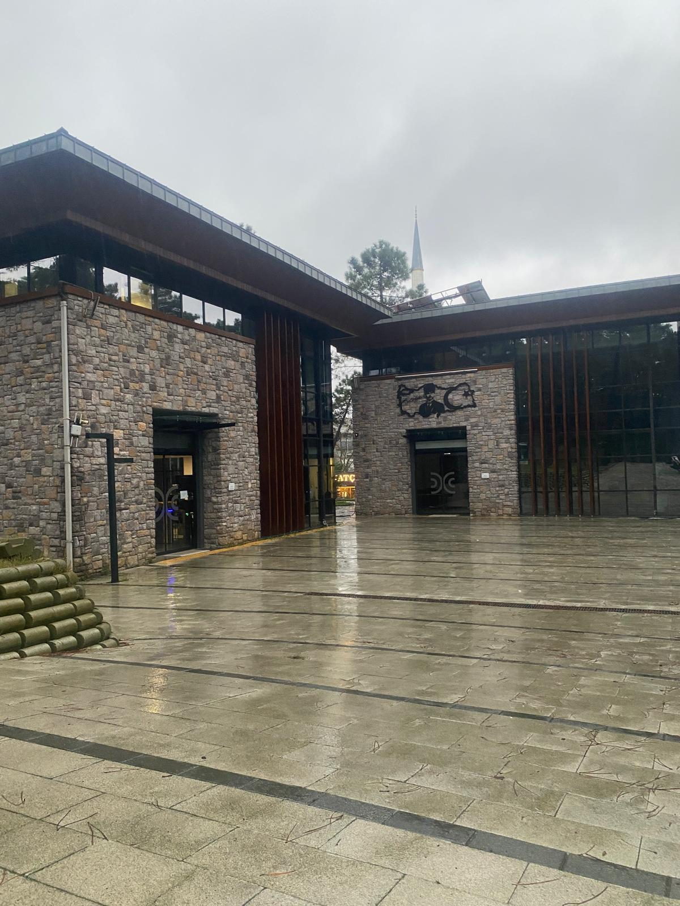
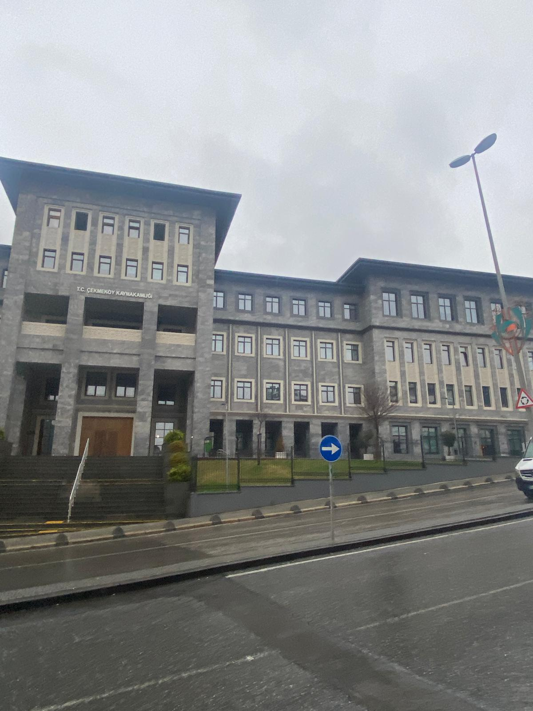

Çekmeköy Fotoğraf Galerisi
Doğa, ormanlar ve kampüs fotoğrafları
Çekmeköy Fotoğraf Galerisi
Çekmeköy'ün doğal güzelliklerini, yeşil alanlarını ve sakin atmosferini yansıtan 18 fotoğraf. Alem Dağı'nın muhteşem manzaraları, Ömerli Barajı'nın huzur veren manzaraları ve bölgenin doğal zenginliği objektifimden.









